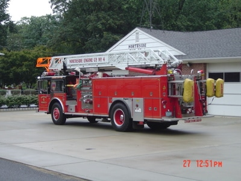
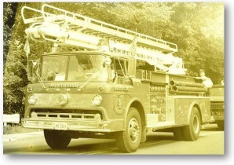

Northside Engine Company runs several types of fire apparatus; each unit provides unique capabilities on the fire scene.
Ladder 36-491
A 2009 Seagrave 100' stick with a 500-gallon water tank, 2000 gpm pump and an 8-person cab. (Also see Building 491 and 491 Wetdown.)
Engine 36-477
A 1994 Seagrave engine with a 750-gallon tank and 1500 gpm pump. It also has a 1500 gpm deck gun and a 10-person cab.
Brush 36-494
Our repurposed military 6x6 cargo truck (220 horsepower, 44,000 lb rear tandems, 20,000 lb front axle), now a brush truck for wooded areas within the borough and neighboring towns. It has protected seating in the cargo area, an 800-gallon water tank, an on-board pump and hose reel, and woodland fire suppression tools.
Rescue 36-486
An International/E-One with a cascade air tank resupply system, fire scene support material and a personnel rehabilitation area.
Santa Run
Every year our members and trucks escort Santa around our response area, taking pictures and giving out candy canes.
Holiday Parade
491 visited Wallington, NJ — home of its sister truck — for their annual holiday parade.
Our previous ladder truck
36-490, a 1989 Seagrave 75' ladder with a 300-gallon tank and 1500 gpm pump. Retired 2010.

Historic equipment
Our 1972 Ford Telesquirt was in service with Northside until 1993. It then served at the Meadowlands for a period.
